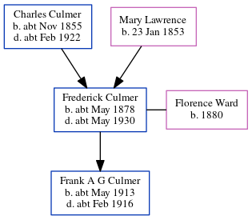

Frederick Percy Culmer cMay 1878 - c1930
[ Home ] | [ Calendar ] | [ Surnames Index ] | [ Census Index ] | [ Family History ]A railroad porter and the child of Charles Culmer (a coal dealer) and Mary Lawrence, Frederick Culmer, the second cousin twice-removed on the mother's side of Nigel Horne, was born in Faversham, Kent, England c. May 18781,2,3,4,5, was baptized there at St Mary of Charity Church, Church Road on May 1, 1878 and married Florence Ward (with whom he had 1 child, Frank A G) in Medway, Kent, England around Feb 19086.
During his life, he was living at 56 Tanners Street in Faversham on Apr 3, 18811 and on Apr 5, 18917; at Cecil Avenue, Strood, Kent on Mar 31, 19012; and at Newark Street, Strood, Kent on Apr 2, 19113.
He died c. May 1930 in Strood, Kent, England5.
Parents
- Charles was born c. Nov 1855
- Mary Ann was born on Jan 23, 1853
Children
- Frank A G was born c. May 1913
Citations
- 1881 England, Wales & Scotland Census - Findmypast (was age 3 and the son of the head of the household)
- 1901 England, Wales & Scotland Census - Findmypast (was age 23 and the son of the head of the household)
- 1911 Census for England & Wales - Findmypast (was age 33 and the head of the household)
- England & Wales births 1837-2006 - Findmypast
- England & Wales deaths 1837-2007 - Findmypast
- England & Wales Marriages 1837-2005 - Findmypast
- 1891 England, Wales & Scotland Census - Findmypast (was age 13 and the son of the head of the household)
Media
1891 England, Wales & Scotland Census - GBC/1891/0005793978
England & Wales births 1837-2006 - BMD/B/1878/2/AZ/000137/365
1911 Census for England & Wales - GBC/1911/RG14/03874/0081/1
England & Wales marriages 1837-2005 - BMD/M/1908/1/AZ/000062/243
England & Wales deaths 1837-2007 Transcription - BMD-D-1930-2-AZ-000186-088
England Births & Baptisms 1538-1975 - R_885849311
Kent, Canterbury Archdeaconry Baptisms Transcription - GBPRS-CANT-B-96258232
Family Tree
Generated by ged2site. Last updated on Jun 11, 2024